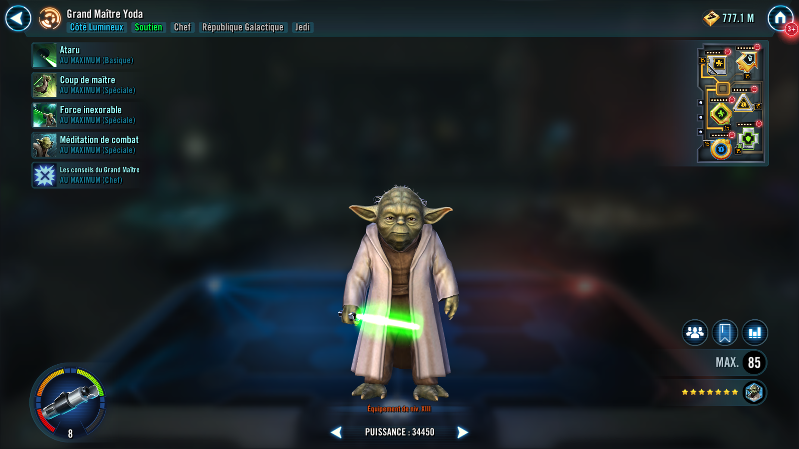

Grand Master Yoda
Masterful Jedi support that can replicate enemy buffs and share them with allies
Masterful Jedi support that can replicate enemy buffs and share them with allies

Deal Special damage to target enemy and inflict Potency Down for 1 Turn. If that enemy has 50% or more Health, Yoda gains 40% Turn Meter and Foresight for 2 turns. If that enemy has less than 50% Health, Yoda gains Offense Up and Defense Penetration Up for 2 turns.
Deal Special damage to all enemies. Then, for each buff an enemy has, Grand Master Yoda gains that effect for 3 turns. (Unique status effects can't be copied.) Grand Master Yoda takes a bonus turn as long as there is one other living Jedi ally.
Deal Special damage to target enemy and remove 70% Turn Meter. If that enemy had less than 100% Health, they are also Stunned for 1 turn.
Yoda gains Tenacity Up, Protection Up (30%), and Foresight for 2 turns, then grants each ally every non-unique buff he has (excluding Stealth and Taunt) for 2 turns. Yoda grants himself +35% Turn Meter and an additional +10% Turn Meter for each other living Jedi ally.
edi allies have +30% Tenacity. Whenever a Jedi ally Resists a debuff, they gain the following: 30% Turn Meter, Critical Chance Up for 2 turns, and Critical Damage Up for 2 turns. Whenever they suffer a debuff, they gain Tenacity Up for 1 turn at the end of that turn. Grand Master Yoda is immune to Shock.